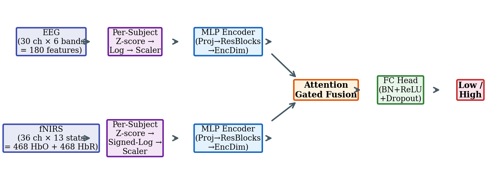
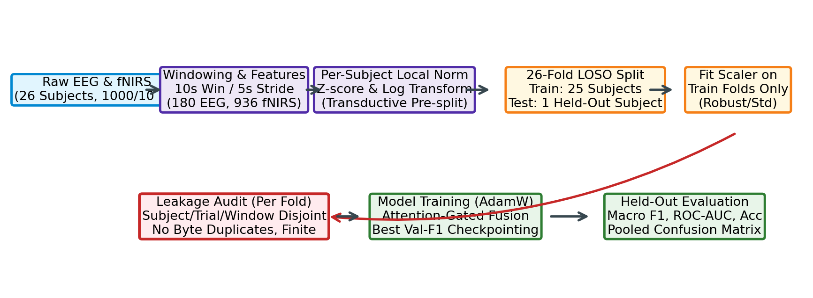
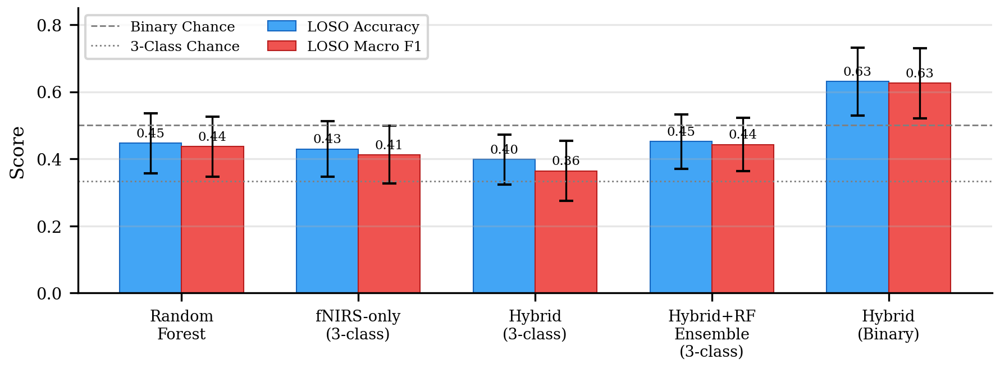
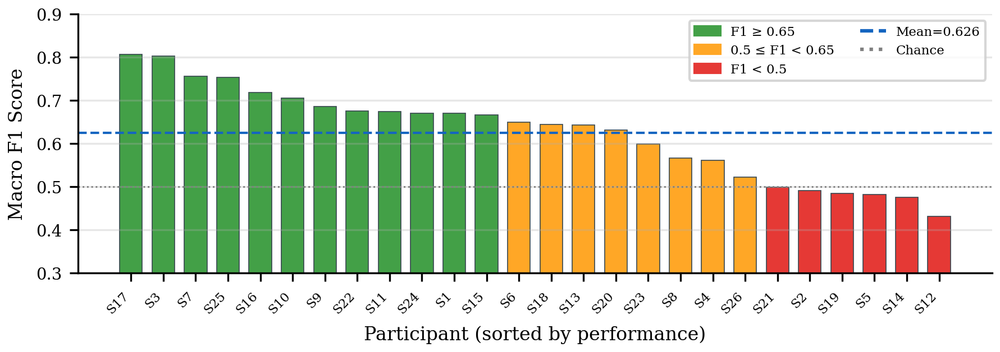
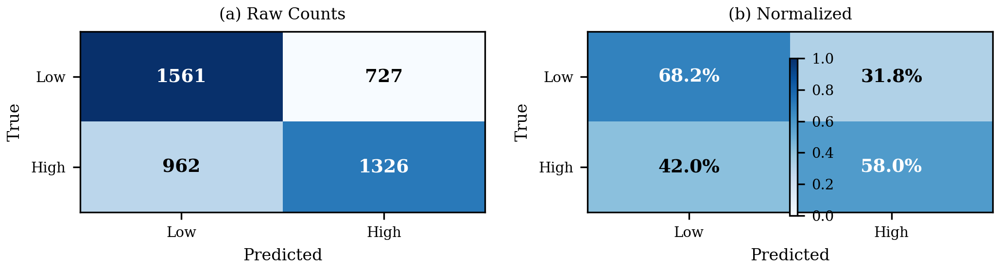
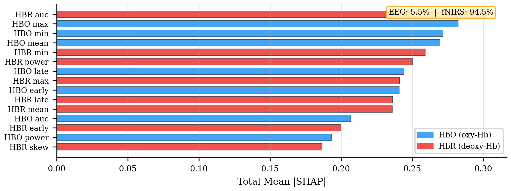

Cognitive workload estimation from neurophysiological signals is essential for designing adaptive interfaces in safety-critical domains such as air traffic control [1], autonomous driving [2], and surgical training [3]. Two complementary brain-sensing modalities dominate this field: electroencephalography (EEG), which captures fast electrical oscillations with millisecond resolution, and functional near-infrared spectroscopy (fNIRS), which measures slower hemodynamic changes in oxygenated (HbO) and deoxygenated (HbR) hemoglobin with superior spatial localization to cortical regions [4].
While within-subject classification accuracies of 70–90% are commonly reported [5], [6], these figures exploit subject-specific baselines that do not transfer to unseen individuals. Leave-one-subject-out (LOSO) evaluation—the protocol that reflects real deployment on new users—typically yields 35–55% accuracy for three-class (low/medium/high) n-back tasks [7], [8], exposing a critical cross-subject generalization gap. This gap, rather than any single architectural choice, is the dominant bottleneck for practical brain–computer interfaces (BCIs).
Despite growing interest in multimodal EEG–fNIRS fusion [9]–[11], several key challenges remain unresolved. First, many published results use fixed train/test splits or within-subject protocols that conflate model performance with memorization of individual physiological signatures. Second, the relative contribution of EEG and fNIRS to cross-subject classification under honest evaluation is poorly characterized. Third, the effectiveness of domain-adaptation techniques such as DANN [12] for this specific multimodal setting has not been rigorously evaluated with paired statistical tests and mechanistic probes.
This paper makes the following contributions:
EEG-based cognitive workload classification has been extensively studied using spectral features, particularly frontal theta and parietal alpha power, which modulate with n-back difficulty [13], [14]. Deep learning approaches including EEGNet [15] and temporal convolutional networks [16] have improved within-subject accuracy but show limited cross-subject transfer.
fNIRS captures hemodynamic correlates of neural activity—specifically HbO increases and HbR decreases in activated cortical regions [4]. For cognitive workload, prefrontal HbO concentration changes during n-back tasks provide discriminative features [17], [6]. The temporal resolution of fNIRS (~10 Hz) is lower than EEG but offers complementary information about sustained metabolic demands.
The complementary temporal and metabolic information in EEG and fNIRS motivates their fusion [11], [10]. Fazli et al. [11] demonstrated significant accuracy improvements with EEG+fNIRS over either modality alone using meta-classification. Subsequent work explored early, intermediate, and late fusion strategies [9], [7]. Attention-based fusion mechanisms that dynamically weight modality contributions have emerged as promising approaches [18].
Subject variability in neurophysiological signals is a fundamental challenge. Transfer learning [19], domain adaptation [12], and subject-specific normalization [7] have been proposed but often evaluated with limited rigor. DANN [12] has shown promise for cross-subject EEG emotion recognition [20] but its effectiveness for multimodal workload classification remains underexplored. A critical gap in the literature is the distinction between within-subject and LOSO evaluation; this protocol difference alone accounts for 20+ percentage points of reported accuracy variation on the same dataset [21].
We use the TU Berlin/Shin open-access simultaneous EEG–fNIRS n-back dataset [5], [7]. Table I summarizes key characteristics.
| Property | Value |
|---|---|
| Source | TU Berlin / Shin et al. [5] |
| Participants | 26 (healthy adults) |
| EEG channels | 30 (10–20 system) |
| fNIRS channels | 36 source–detector pairs |
| EEG sampling rate | 1000 Hz |
| fNIRS sampling rate | 10 Hz |
| N-back conditions | 0-back, 2-back, 3-back |
| Binary labels | Low (0-back) vs. High (3-back) |
| Sliding windows | 10 s window / 5 s stride |
| Usable windows | 4,576 (balanced: 2,288 per class) |
| EEG features | 180 (30 ch × 6 band powers) |
| fNIRS features | 936 (36 ch × 13 stats × HbO+HbR) |
EEG signals are bandpass filtered (0.5–45 Hz) and decomposed into six frequency bands: delta (1–4 Hz), theta (4–8 Hz), alpha (8–13 Hz), beta (13–30 Hz), gamma (30–45 Hz), and an engagement ratio. For each 10-second window, band power is computed per channel, yielding 180 features (30 channels × 6 bands). fNIRS signals yield 13 statistical descriptors per channel (mean, max, min, AUC, slope, skewness, kurtosis, early/late window response, delta, power, and std) for both HbO and HbR chromophores across 36 channels, producing up to 936 features.
Per-subject z-score normalization is applied before log transformation to remove subject-specific physiological baselines. EEG features undergo log(1 + |x|) compression; fNIRS features undergo signed-log transformation sgn(x) · log(1 + |x|). After these transforms, a RobustScaler (EEG) or StandardScaler (fNIRS) is fitted on training data only within each LOSO fold.
Fig. 1 illustrates the overall system. The architecture consists of:
Per-Modality MLP Encoders. Each modality passes through an input projection layer (Linear → BatchNorm → ReLU → Dropout), followed by two residual MLP blocks (each containing two linear layers with BatchNorm, ReLU, and residual connections), and an output projection to a shared denc-dimensional space.
Attention-Gated Fusion. Given encoder outputs eEEG and efNIRS, the concatenation [eEEG; efNIRS] is passed through two parallel sigmoid gates:
The fused representation is f = [gEEG ⊙ eEEG; gfNIRS ⊙ efNIRS], which is projected through a linear layer with BatchNorm, ReLU, and dropout.
Classification Head. A two-layer MLP (48 → 24 → 2) with BatchNorm, ReLU, dropout (p = 0.6), and a final linear layer for binary classification. The total model contains ~245K trainable parameters.

Fig. 2 illustrates the end-to-end processing and evaluation workflow. All results use 26-fold LOSO cross-validation: for each fold, one subject is held out for testing, while the remaining 25 are split into training and validation sets by subject. Performance is reported as mean ± standard deviation across the 26 folds. The binary task (Low vs. High) excludes 2-back trials, yielding 4,576 balanced windows.

An automated leakage audit runs before each fold trains (Section IV-C). Class weights are computed per fold using scikit-learn's balanced mode. The checkpoint with the best validation macro F1 is selected for testing.
The framework is implemented in PyTorch 2.x with scikit-learn for preprocessing and classical baselines. Training uses AdamW [22] with learning rate 3 × 10−4, weight decay 10−2, batch size 16, and a ReduceLROnPlateau scheduler (patience 4, factor 0.5). Early stopping patience is set to 7 epochs; maximum budget is 35 epochs. Gaussian noise augmentation (σ = 0.05) is applied to training inputs.
We evaluate the following models under identical LOSO folds:
Additionally, a 58-configuration search varied batch size, learning rate, dropout, weight decay, LR schedule, capacity, architecture, modality dropout, noise, DANN lambda, window size, normalization stage, and feature set.
Every fold passes an automated audit before training commences. Table II lists the checks. Any failure raises a LeakageError and aborts the fold, ensuring no leaked score is ever produced. Negative tests deliberately inject each leakage type and confirm the audit catches it.
| Check | Status |
|---|---|
| Subject disjointness (train/val/test) | PASS |
| Trial disjointness across splits | PASS |
| Window identity disjointness | PASS |
| No byte-identical feature rows across splits | PASS |
| Row-index disjointness | PASS |
| Scaler fitted on training rows only | PASS |
| Held-out subject absent from train & val | PASS |
| Per-subject norm is subject-local | PASS |
| Features finite (no NaN/Inf) | PASS |
| Label sanity (correct mapping, all classes) | PASS |
Table III presents the LOSO results for all evaluated models. The proposed attention-gated hybrid achieves the best Macro F1 (0.6255) among neural models. The attention mechanism outperforms concatenation fusion (+0.004 F1, p = 0.23), though the difference is not statistically significant. The fNIRS-only model (F1 = 0.41) substantially outperforms EEG-only on the 3-class task, consistent with the dominance of hemodynamic features observed in SHAP analysis. The CNN-based architectures underperform MLP encoders, suggesting that the pre-extracted band-power/statistical features do not benefit from convolutional inductive biases.
| Model | LOSO Acc. | Macro F1 | ROC-AUC |
|---|---|---|---|
| Hybrid (ours) | .631 ± .101 | .626 ± .104 | .678 ± .129 |
| MLP + Concat | .636 ± .101 | .629 ± .101 | .683 ± .107 |
| CNN + Residual | .576 ± .084 | .555 ± .084 | .604 ± .084 |
| fNIRS-only† | .430 ± .082 | .413 ± .087 | .612 ± .085 |
| Random Forest | .447 ± .090 | .437 ± .090 | .619 ± .087 |
| DANN (λ = 0.1) | .626 ± .098 | .618 ± .098 | .680 ± .107 |
Fig. 3 visualizes the LOSO performance across models with uncertainty bars.

Table IV summarizes key ablations from the 58-experiment search, all evaluated on identical LOSO folds with paired testing.
| Ablation | Macro F1 | Δ vs. Base |
|---|---|---|
| Baseline (attn. fusion) | .645 ± .078 | — |
| Fusion method | ||
| Concat fusion | .629 ± .101 | −.016 |
| Cross-attention | .547 ± .079 | −.098 |
| Normalization | ||
| No per-subject norm | .570 ± .106 | −.075 |
| Norm after log | .615 ± .099 | −.030 |
| Modality | ||
| HbO only (drop HbR) | .578 ± .098 | −.067 |
| Domain adaptation | ||
| DANN λ = 0.1 | .618 ± .098 | −.027 |
| DANN λ = 1.0 | .578 ± .110 | −.067 |
| Architecture | ||
| CNN + res. + attention | .547 ± .079 | −.098 |
| Proj. dim 192 (620K) | .661 ± .101 | +.016 |
| Narrow (66K) | .647 ± .112 | +.002 |
| Regularization | ||
| Dropout 0.6/0.7 | .508 ± .127 | −.137 |
| Label smoothing 0.1 | .605 ± .141 | −.040 |
Key findings: (1) per-subject normalization is essential (−0.075 F1 without it, p = 0.014); (2) attention fusion marginally outperforms concatenation; (3) neither increased capacity (620K params) nor reduced capacity (66K params) yields statistically significant improvement; and (4) DANN degrades monotonically with adversarial strength.
Fig. 4 shows the binary LOSO macro F1 for all 26 subjects. Performance varies from 0.431 (S12) to 0.807 (S17)—a 37.6-point spread that exceeds the difference between any two models compared above. This inter-subject variability is the dominant source of uncertainty, consistent with known challenges in neurophysiological BCIs [21], [23].

Fig. 5 presents the pooled confusion matrix from all 4,576 held-out predictions. Low-workload recall (68.2%) exceeds High-workload recall (58.0%), consistent with prior work showing that resting-state EEG/fNIRS patterns (0-back) are more stereotyped across subjects than high-load patterns [17].

Fig. 6 shows SHAP-based feature family importance. fNIRS features dominate (94.5% of total |SHAP|), with HbR AUC and HbO max/min/mean as the most informative families. This is physiologically plausible: the n-back task engages prefrontal cortex, where hemodynamic changes are large and relatively consistent across subjects. EEG band-power features contribute only 5.5%, suggesting that scalp-level spectral features carry less transferable cross-subject signal than hemodynamic descriptors for this task and preprocessing pipeline.

The binary LOSO accuracy of 63.09% substantially exceeds the 50% chance level and is consistent with the realistic state of the art for honest cross-subject evaluation on this dataset. The 17.5-point train–held-out generalization gap (train F1 0.80, held-out F1 0.63) confirms that overfitting to subject-specific patterns remains a challenge even with extensive regularization.
The protocol taxonomy benchmark (3-class vs. binary, within-subject vs. LOSO) reveals that task difficulty—not subject leakage—explains the gap between our numbers and headline literature figures of 70–90%. Collapsing to binary lifts LOSO F1 by ~0.20, while within-subject vs. LOSO accounts for a smaller difference on this dataset once per-subject normalization is applied.
Three converging lines of evidence explain DANN's failure on this dataset: (1) the protocol benchmark shows subject-baseline leakage is already a minor effect after per-subject normalization; (2) a subject-invariance probe on the baseline representation shows near-chance subject-identity recovery (0.091 vs. 0.050 chance, for 20 subjects), leaving little decodable subject information for the adversary to strip; and (3) the DANN lambda sweep degrades monotonically (F1: 0.42 → 0.36 as λ: 0 → 2), consistent with the adversary injecting noise rather than removing a harmful confound. This is a legitimate negative result: the cross-subject difficulty here reflects genuine task difficulty and limited transferable signal, not a decodable identity confound.
The asymmetric SHAP attribution (fNIRS 94.5% vs. EEG 5.5%) and the finding that fNIRS-only outperforms the hybrid on 3-class LOSO raise the question of whether EEG contributes meaningfully. Two observations argue for retaining EEG: (1) the attention gate analysis shows the EEG gate mean (0.478) is non-trivially different from zero, suggesting the model extracts some complementary information; and (2) the binary hybrid does outperform fNIRS-only (F1 0.63 vs. 0.41 on 3-class), indicating that EEG's marginal contribution becomes useful when the classification task is sufficiently constrained.
Direct comparison with published accuracies requires matching the evaluation protocol. Shin et al. [7] reported 71.2% within-subject accuracy (3-class). Our binary LOSO accuracy of 63.1% on the same dataset is not directly comparable due to protocol and class differences. Under matched LOSO conditions, our 3-class result (39.8% accuracy, F1 0.364) is consistent with the challenging nature of cross-subject 3-class decoding on this dataset [8].
Per-subject normalization uses each subject's own statistics (transductive setting). In deployment, a calibration session would be needed to collect these statistics for a new user, which limits immediate applicability.
Small cohort. 26 subjects is standard for this dataset but insufficient for strong generalization claims. The wide per-subject performance spread (Fig. 4) may not represent the broader population.
Pre-extracted features. The pipeline operates on extracted band-power and statistical descriptors, not raw signals. End-to-end models operating on raw EEG/fNIRS waveforms may capture dynamics lost in feature extraction.
Single dataset. Results are specific to the TU Berlin n-back paradigm. Transfer to other cognitive tasks (e.g., Stroop, dual-task) or clinical populations has not been validated.
Baseline mismatch. A small discrepancy (~2 points) was observed between baseline reproductions across different environments, documented but unresolved. All comparisons are paired within runs to mitigate this.
We presented a leakage-audited multimodal EEG–fNIRS framework for binary cognitive workload estimation that achieves 63.09% LOSO accuracy with attention-gated fusion. The key findings are: (1) fNIRS hemodynamic features dominate cross-subject classification (94.5% SHAP attribution); (2) per-subject normalization is essential and statistically significant; (3) a 58-experiment search found no configuration that significantly improves on the attention-gated baseline; and (4) DANN does not help because the cross-subject challenge reflects genuine task difficulty rather than a decodable identity confound.
Future directions include: end-to-end learning from raw signals to bypass hand-crafted feature extraction; test-time calibration strategies that require minimal per-user data; cross-dataset evaluation using the universal ingestion layer already implemented; and exploration of graph neural networks to exploit spatial relationships between channels. The full codebase, including the leakage audit framework and all 58 experiment records, is available for reproducibility.